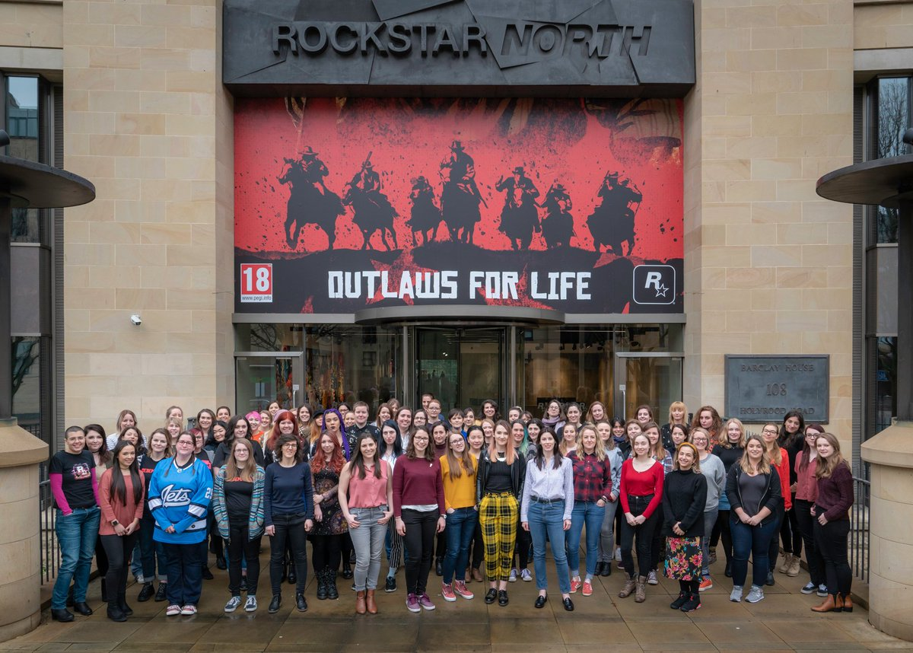
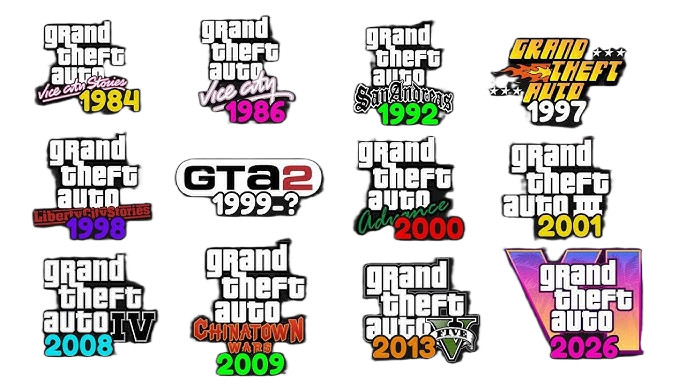
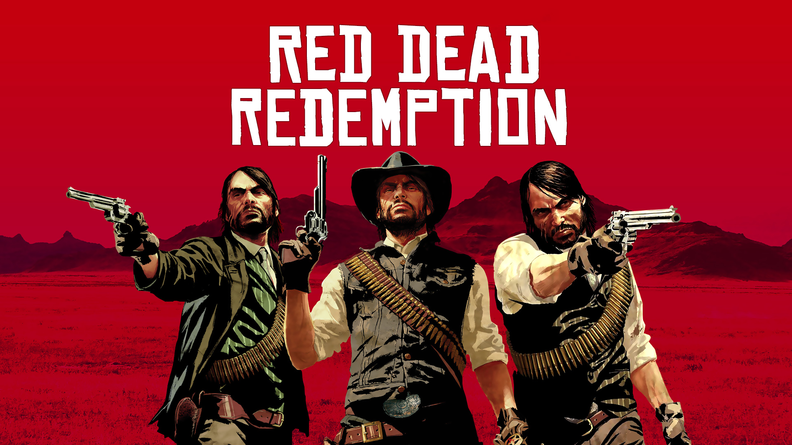
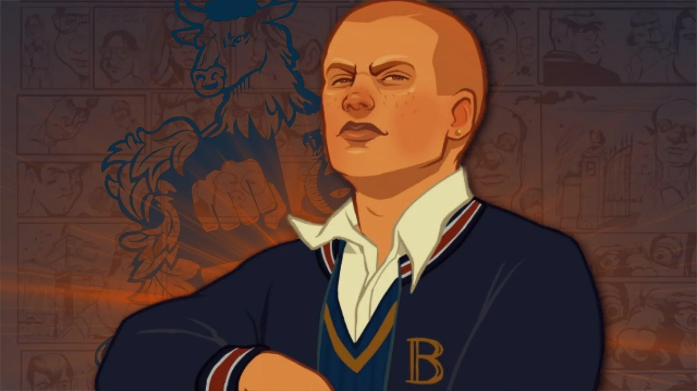
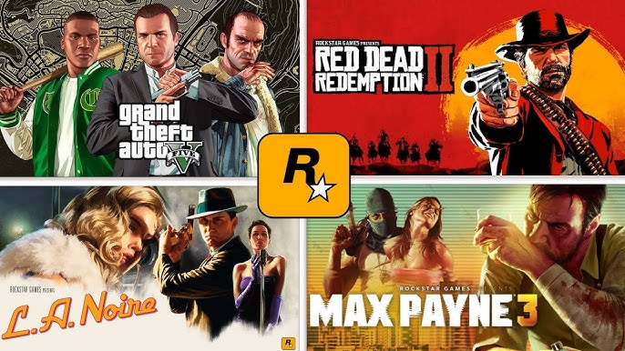

Esta página tem como objetivo apresentar a história da Rockstar Games, uma das empresas mais influentes da indústria dos videogames. Ao longo do conteúdo, será abordada sua fundação, os principais jogos desenvolvidos e o impacto que a empresa teve no mundo dos games. Também será mostrado como a Rockstar evoluiu com o passar dos anos, desde seus primeiros títulos até os lançamentos mais recentes, destacando sua inovação, qualidade gráfica e narrativas marcantes que conquistaram milhões de jogadores ao redor do mundo.
História da Rockstar Games:
A Rockstar Games é uma das empresas mais importantes da indústria dos videogames, conhecida por criar jogos de mundo aberto com alta qualidade e histórias marcantes. Nesta página, você irá conhecer sua trajetória, desde sua criação até os dias atuais. A Rockstar Games foi fundada em 1998 e rapidamente ganhou destaque no mercado. A empresa faz parte da Take-Two Interactive e ficou famosa principalmente pela série Grand Theft Auto (GTA), que revolucionou os jogos de mundo aberto.

Funcionários da Rockstar North, estúdio responsável por alguns dos jogos mais famosos da Rockstar Games.
Grand Theft Auto (GTA):
A franquia Grand Theft Auto (GTA) nasceu no final dos anos 90 dentro da desenvolvedora escocesa DMA Design, que mais tarde se tornaria a Rockstar North, sob o comando da publicadora Rockstar Games. O projeto original começou quase por acaso: a ideia inicial era um jogo de corrida chamado Race’n’Chase, mas durante os testes surgiu um “bug” onde a polícia ficava extremamente agressiva. Em vez de remover isso, os desenvolvedores perceberam que fugir da polícia era muito mais divertido — e aí nasceu o conceito central de GTA. O primeiro jogo, Grand Theft Auto (1997), tinha visão de cima (2D) e colocava o jogador no controle de um criminoso em cidades inspiradas em locais reais, como Liberty City, Vice City e San Andreas. A liberdade era o grande diferencial: você podia ignorar missões e simplesmente causar caos. A sequência veio com Grand Theft Auto 2 (1999), que manteve a base do primeiro, mas trouxe melhorias como sistema de gangues e ambientação futurista. Mesmo assim, foi com Grand Theft Auto III que a franquia revolucionou de verdade a indústria. Esse jogo introduziu o mundo aberto em 3D, câmera em terceira pessoa e narrativa cinematográfica. Foi um divisor de águas. Depois disso, a Rockstar entrou numa fase absurda de crescimento. Grand Theft Auto: Vice City trouxe uma ambientação anos 80, protagonista carismático (Tommy Vercetti) e uma trilha sonora icônica. Logo em seguida, Grand Theft Auto: San Andreas expandiu tudo: mapa gigantesco, múltiplas cidades, customização do personagem e uma história focada em gangues e corrupção. A franquia também teve spin-offs importantes, como:
- Grand Theft Auto: Liberty City Stories
- Grand Theft Auto: Vice City Stories
- Grand Theft Auto: Chinatown Wars
Esses jogos expandiram o universo com novas histórias nas mesmas cidades. Em 2008, a Rockstar lançou Grand Theft Auto IV, que trouxe um tom mais realista e pesado. O protagonista, Niko Bellic, vive o “sonho americano” de forma sombria, abordando temas como imigração, guerra e moralidade. A física e a narrativa deram um salto enorme. Mas o auge comercial veio com Grand Theft Auto V, um dos jogos mais vendidos da história. Ele inovou com três protagonistas (Michael, Trevor e Franklin), mundo extremamente detalhado e integração com o modo online, o Grand Theft Auto Online, que virou praticamente um jogo à parte. Ao longo dos anos, GTA sempre foi cercado de polêmicas por violência e liberdade extrema, mas virou um fenômeno cultural. A Rockstar ficou conhecida por sua atenção absurda aos detalhes e críticas sociais escondidas em meio ao caos. Atualmente, a franquia segue evoluindo, com o aguardado Grand Theft Auto VI, prometendo levar o realismo e a imersão a um novo nível.

A franquia GTA é conhecida pelo seu mundo aberto, liberdade e grande impacto na história dos videogames.
Red Dead Redemption:
A franquia Red Dead, desenvolvida pela Rockstar Games, é uma das mais aclamadas da indústria dos videogames, conhecida por seus jogos de mundo aberto ambientados no Velho Oeste. Tudo começou com Red Dead Revolver (2004), que introduziu a temática de faroeste com foco em ação. No entanto, foi com Red Dead Redemption (2010) que a série ganhou destaque mundial, trazendo uma narrativa profunda sobre redenção, honra e o fim da era dos fora da lei, acompanhando a jornada de John Marston. Anos depois, a Rockstar elevou ainda mais o nível com Red Dead Redemption 2 (2018), considerado um dos jogos mais realistas já feitos, com um mundo extremamente detalhado, personagens complexos como Arthur Morgan e uma história emocional que explora lealdade, moralidade e sobrevivência. A franquia também conta com o modo online, Red Dead Online, que expande a experiência com atividades multiplayer. Ao longo dos anos, Red Dead se destacou pela sua atenção aos detalhes, trilha sonora imersiva e narrativa cinematográfica, se consolidando como uma das maiores e mais respeitadas franquias dos videogames.

A franquia Red Dead é conhecida pelo seu mundo aberto e histórias marcantes no Velho Oeste.
Bully:
O jogo Bully, desenvolvido pela Rockstar Games, é um dos títulos mais únicos da empresa, trazendo uma proposta diferente dos tradicionais jogos de crime. Lançado em 2006, o jogo se passa na fictícia Academia Bullworth, uma escola cheia de estereótipos e grupos sociais bem definidos, como valentões, nerds, atletas e populares. O jogador controla Jimmy Hopkins, um adolescente problemático que precisa se adaptar a esse ambiente hostil enquanto enfrenta desafios, missões e conflitos típicos da vida escolar. Diferente de franquias como GTA, Bully foca em uma experiência de mundo aberto em escala menor, mas extremamente detalhada, permitindo explorar a escola, a cidade ao redor, assistir aulas, participar de atividades e interagir com diversos personagens. O jogo mistura humor, crítica social e narrativa envolvente, abordando temas como bullying, autoridade e convivência social de forma leve, mas impactante. Com o tempo, Bully se tornou um clássico cult, sendo muito lembrado pelos fãs e constantemente pedido por uma continuação, mesmo anos após seu lançamento. Sua jogabilidade variada, trilha sonora marcante e estilo único garantem seu lugar como um dos jogos mais diferentes e memoráveis da Rockstar.

O jogo Bully é conhecido por sua ambientação escolar em mundo aberto e pelo seu estilo único dentro dos jogos da Rockstar.
Outras franquias da Rockstar Games:
Além das franquias mais conhecidas como GTA, Red Dead e Bully, a Rockstar Games construiu uma trajetória impressionante com diversos outros jogos que também marcaram a história dos videogames. A série Midnight Club é um grande exemplo disso, trazendo corridas urbanas intensas, com foco total em velocidade, liberdade e personalização de veículos, permitindo ao jogador explorar cidades inspiradas em locais reais enquanto compete em disputas ilegais cheias de adrenalina. Já Max Payne apresentou uma abordagem completamente diferente, focando em uma narrativa sombria e profunda, acompanhando a história de um policial marcado por tragédias, além de introduzir o icônico sistema de bullet time, que revolucionou os jogos de tiro ao permitir desacelerar o tempo durante os combates.
Outro título extremamente importante é L.A. Noire, que trouxe inovação ao colocar o jogador no papel de um detetive, focando em investigações, análise de pistas e interrogatórios. O jogo utilizou uma tecnologia avançada de captura facial, permitindo identificar mentiras através das expressões dos personagens, algo muito à frente do seu tempo. A Rockstar também explorou experiências mais ousadas com Manhunt, um jogo conhecido por sua atmosfera pesada e controversa, focado em furtividade e sobrevivência, e The Warriors, baseado no filme cult, que trouxe uma adaptação fiel com foco em combate e narrativa urbana.
Além disso, a empresa também trabalhou em jogos como Smuggler’s Run, voltado para exploração e contrabando em mapas abertos, e Table Tennis, que apesar de simples, demonstrou a capacidade técnica da Rockstar em física e realismo. Esses projetos mostram que a empresa não se limita a um único estilo, mas sim explora diferentes gêneros como corrida, ação, investigação, esportes e narrativa cinematográfica. Ao longo dos anos, todos esses jogos ajudaram a consolidar a Rockstar como uma das desenvolvedoras mais versáteis, criativas e influentes da indústria, sempre buscando inovação, qualidade e experiências marcantes para os jogadores.

Outros jogos da Rockstar Games mostram sua versatilidade, explorando diferentes estilos como corrida, ação e investigação.
| Jogo | Ano | Investimento (USD) |
|---|---|---|
| GTA VI | 2025 | $2 bilhões |
| GTA V | 2013 | $265 milhões |
| Red Dead Redemption 2 | 2018 | $170 milhões |
| GTA IV | 2008 | $100 milhões |
| L.A. Noire | 2011 | $50 milhões |
| Max Payne 3 | 2012 | $35 milhões |
| Bully | 2006 | $20 milhões |
| Valores aproximados baseados em estimativas da indústria | ||